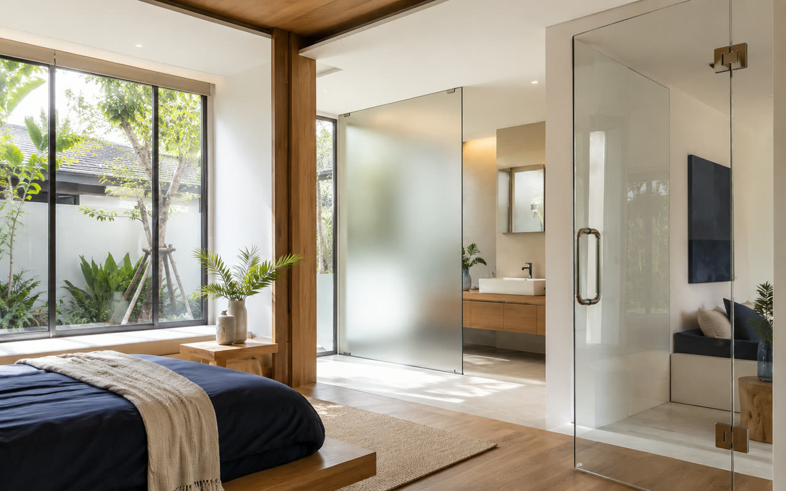
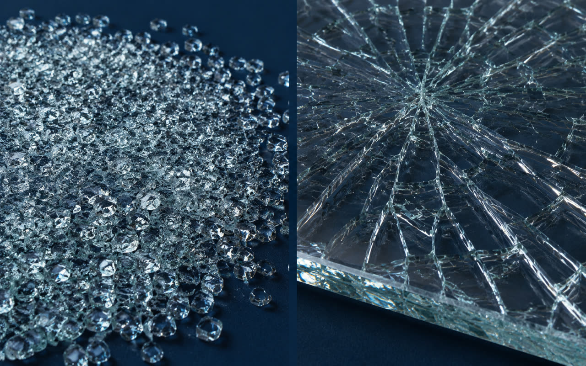
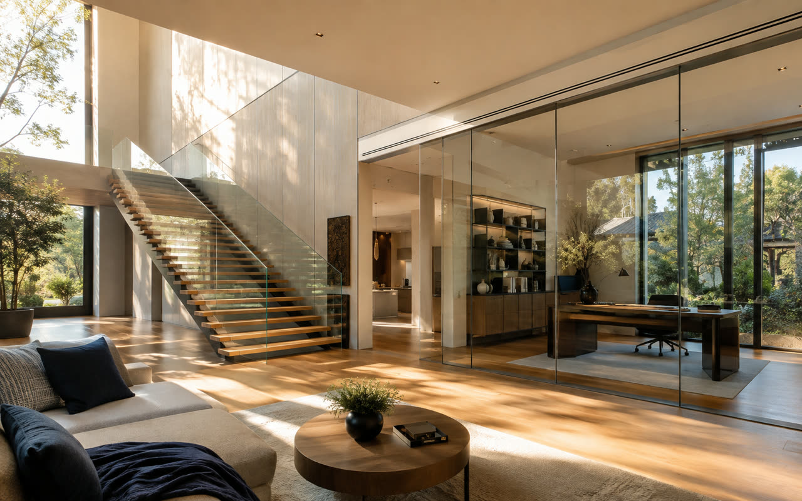

ผู้เชี่ยวชาญด้านงานกระจกครบวงจร
รับติดตั้งกระจกและอลูมิเนียม
ศรีราชา ชลบุรี ครบวงจร
All About Glass ผู้เชี่ยวชาญงานกระจกและอลูมิเนียมในพื้นที่ศรีราชาและชลบุรี ให้บริการออกแบบ ผลิต และติดตั้งกระจกอาคาร หน้าต่าง-ประตู กระจกเทมเปอร์นิรภัย กระจกลามิเนต บานเฟอร์นิเจอร์ และราวกันตก โดยทีมช่างมืออาชีพ พร้อมให้คำปรึกษาฟรี
เกี่ยวกับเรา
บริษัท ออล อะเบ้าท์ กลาส จำกัด — ผู้เชี่ยวชาญงานกระจก ศรีราชา ชลบุรี
เราคือ glass solution ที่ช่วยแก้ไขปัญหาให้กับลูกค้าทุกท่าน เรายินดีให้คำปรึกษาเพื่อให้ลูกค้าตัดสินใจเลือกกระจกและอลูมิเนียมที่เหมาะสม ตรงกับความต้องการ
สินค้าและบริการหลักของเราคือ จัดจำหน่ายกระจกทุกประเภท ตั้งแต่งานกระจกอาคาร หน้าต่าง-ประตู กระจกเทมเปอร์/นิรภัยสำหรับบ้าน งานตกแต่งภายในอย่างผนังกระจก บันได ราวกันตก ไปจนถึงกระจกลามิเนตและกระจกเฟอร์นิเจอร์ เช่น โต๊ะ ตู้ และชั้นวาง
ด้วยทีมช่างที่มีประสบการณ์ และการดูแลตั้งแต่ให้คำปรึกษา วัดพื้นที่หน้างาน จนถึงติดตั้งเสร็จสมบูรณ์ เราตั้งใจส่งมอบงานที่ได้มาตรฐาน ปลอดภัย และตรงต่อเวลาให้กับลูกค้าทุกราย
สินค้าและบริการ
กระจกและอลูมิเนียมครบวงจร ทั้งสินค้าและบริการติดตั้ง
เลือกดูรายละเอียดสินค้ากระจกทุกประเภท หรือบริการติดตั้งของเรา
บริการของเรา
บริการติดตั้งกระจกและอลูมิเนียม ศรีราชา ชลบุรี
รับติดตั้งงานกระจกและอลูมิเนียมทุกรูปแบบ ตั้งแต่งานอาคารขนาดใหญ่ ไปจนถึงงานตกแต่งภายในบ้าน
-
01
ติดตั้งบานอลูมิเนียมภายในแบบต่างๆ
บริการติดตั้งบานอลูมิเนียมสำหรับงานภายใน หลากหลายรูปแบบตามความต้องการ
-
02
ติดตั้งบานเฟอร์นิเจอร์แบบต่างๆ
บริการติดตั้งบานเฟอร์นิเจอร์กระจก โต๊ะ ตู้ ชั้นวาง ตามแบบที่ต้องการ
-
03
ติดตั้งกระจกอาคาร ราวกันตก ฯลฯ
บริการติดตั้งกระจกอาคาร ผนังกระจก และราวกันตก งานขนาดใหญ่ครบวงจร
-
04
ติดตั้งแบบอื่นๆ
รับติดตั้งงานกระจกและอลูมิเนียมตามความต้องการเฉพาะของลูกค้า
สินค้าของเรา
กระจกทุกประเภท จำหน่ายและติดตั้งโดย All About Glass
เลือกชนิดกระจกที่เหมาะกับงานของคุณ พร้อมบริการให้คำปรึกษาโดยทีมผู้เชี่ยวชาญ
-
01
กระจกใส (Clear Glass)
กระจกใสมาตรฐานสำหรับงานหน้าต่าง ประตู และผนังทั่วไป
-
02
กระจกเทมเปอร์/นิรภัย
กระจกนิรภัยเทมเปอร์ ทนแรงกระแทก แตกแล้วไม่บาด
-
03
กระจกลามิเนต/นิรภัย
กระจกนิรภัยหลายชั้น เพิ่มความปลอดภัยและลดเสียง
-
04
กระจกฝ้า/กระจกลาย
กระจกสำหรับงานตกแต่งที่ต้องการความเป็นส่วนตัว
-
05
กระจกสี/กระจกทึบ
กระจกสีสำหรับงานตกแต่งภายในและภายนอกอาคาร
ผลงานของเรา
ตัวอย่างผลงานที่ผ่านมา
- [ ผลงาน 1 ]
- [ ผลงาน 2 ]
- [ ผลงาน 3 ]
- [ ผลงาน 4 ]
- [ ผลงาน 5 ]
- [ ผลงาน 6 ]
- [ ผลงาน 7 ]
- [ ผลงาน 8 ]
บทความ
สาระความรู้เกี่ยวกับกระจกและอลูมิเนียม
-

วิธีเลือกกระจกให้เหมาะกับบ้านของคุณ
แนะนำการเลือกชนิดกระจกให้เหมาะกับการใช้งานแต่ละพื้นที่
-

กระจกเทมเปอร์ vs กระจกลามิเนต ต่างกันอย่างไร
เปรียบเทียบคุณสมบัติและความปลอดภัยของกระจกทั้งสองชนิด
-

ไอเดียตกแต่งบ้านด้วยงานกระจก
รวมไอเดียการใช้กระจกเพื่อเพิ่มความสวยงามและโปร่งโล่ง
บทความ
วิธีเลือกกระจกให้เหมาะกับบ้านของคุณ
กระจกไม่ได้มีแบบเดียว และไม่ใช่ทุกชนิดจะเหมาะกับทุกพื้นที่ในบ้าน การเลือกกระจกผิดประเภทอาจหมายถึงความเสี่ยงด้านความปลอดภัย ค่าใช้จ่ายที่สูงเกินจำเป็น หรือกระจกที่ใช้งานได้ไม่ตรงตามที่ต้องการ บทความนี้จะช่วยแนะนำหลักการเลือกกระจกให้เหมาะกับแต่ละพื้นที่ของบ้านคุณ
กระจกใส (Clear Glass) — หน้าต่างและประตูทั่วไป
เป็นกระจกพื้นฐานที่ใช้กันมากที่สุด เหมาะกับหน้าต่าง ประตู และผนังที่ไม่ได้เสี่ยงต่อแรงกระแทกหรือการแตกหักเป็นพิเศษ ราคาประหยัด ให้แสงผ่านได้เต็มที่ เหมาะกับงบประมาณจำกัดหรือพื้นที่ที่ไม่ต้องการคุณสมบัติพิเศษเพิ่มเติม
กระจกเทมเปอร์/นิรภัย — จุดที่เสี่ยงกระแทกหรือมีคนสัมผัสบ่อย
ผ่านกระบวนการอบความร้อนแล้วเป่าเย็นอย่างรวดเร็ว ทำให้แข็งแรงกว่ากระจกธรรมดาหลายเท่า และเมื่อแตกจะแตกเป็นเม็ดเล็กทู่ ไม่เป็นเศษคมบาด เหมาะกับประตูบานเลื่อน ผนังกั้นห้อง โต๊ะกระจก และจุดที่เด็กหรือผู้สูงอายุสัมผัสบ่อย
กระจกฝ้า/กระจกลาย — พื้นที่ต้องการความเป็นส่วนตัว
ให้แสงผ่านได้แต่บดบังทัศนวิสัย เหมาะกับห้องน้ำ ห้องทำงาน หรือส่วนที่ต้องการความเป็นส่วนตัวโดยไม่อยากปิดทึบจนขาดแสงธรรมชาติ มีทั้งแบบฝ้าทั้งแผ่นและแบบมีลวดลาย เลือกได้ตามสไตล์การตกแต่ง
กระจกลามิเนต — พื้นที่เสี่ยงสูงหรือต้องการกันเสียง
กระจกหลายชั้นประกบด้วยฟิล์มตรงกลาง แม้แตกก็ยังยึดติดเป็นแผ่นเดียว ไม่ร่วงหล่น เหมาะกับสกายไลท์ ระเบียงชั้นสูง หรือบ้านที่ต้องการลดเสียงรบกวนจากภายนอก เป็นกระจกที่ให้ความปลอดภัยสูงสุดในกลุ่มกระจกนิรภัย
สิ่งที่ควรพิจารณาก่อนตัดสินใจ
นอกจากชนิดของกระจกแล้ว ควรพิจารณาความหนาที่เหมาะกับขนาดช่องเปิด ทิศทางแดดที่กระทบ งบประมาณโดยรวม และมาตรฐานความปลอดภัยที่กฎหมายกำหนดสำหรับพื้นที่นั้นๆ เช่น บันไดหรือราวกันตกที่มักกำหนดให้ต้องใช้กระจกนิรภัยเท่านั้น
ไม่แน่ใจว่าบ้านของคุณเหมาะกับกระจกชนิดไหน?
ปรึกษาทีมงานฟรีบทความ
กระจกเทมเปอร์ vs กระจกลามิเนต ต่างกันอย่างไร
กระจกเทมเปอร์และกระจกลามิเนตต่างจัดอยู่ในกลุ่ม "กระจกนิรภัย" ทั้งคู่ แต่กระบวนการผลิต คุณสมบัติ และการใช้งานที่เหมาะสมนั้นแตกต่างกันชัดเจน การเข้าใจความต่างจะช่วยให้เลือกใช้ได้ตรงกับความต้องการและงบประมาณมากขึ้น
กระจกเทมเปอร์ผลิตอย่างไร
ผ่านกระบวนการให้ความร้อนสูงจนเกือบถึงจุดอ่อนตัว แล้วเป่าเย็นผิวหน้าอย่างรวดเร็วและสม่ำเสมอ ทำให้เกิดแรงอัดที่ผิวกระจก ส่งผลให้แข็งแรงกว่ากระจกธรรมดาทั่วไปประมาณ 4-5 เท่า เมื่อแตกจะแตกกระจายเป็นเม็ดเล็กทู่ ไม่มีคมบาด
กระจกลามิเนตผลิตอย่างไร
เกิดจากกระจก 2 แผ่น (หรือมากกว่า) ประกบกันโดยมีฟิล์ม PVB (Polyvinyl Butyral) คั่นตรงกลาง ผ่านความร้อนและแรงดันให้ยึดติดเป็นเนื้อเดียวกัน เมื่อแตกกระจกจะยังคงเกาะติดกับฟิล์มไม่ร่วงหล่น พร้อมช่วยกรองเสียงและรังสียูวีได้ในระดับหนึ่ง
เปรียบเทียบการใช้งาน
กระจกเทมเปอร์ เหมาะกับจุดที่เสี่ยงกระแทกทั่วไป เช่น ประตูห้องน้ำ ประตูบานเลื่อน โต๊ะกระจก และราวกันตกมาตรฐาน ด้วยราคาที่คุ้มค่าและแข็งแรงเพียงพอสำหรับการใช้งานส่วนใหญ่ในบ้านพักอาศัย
กระจกลามิเนต เหมาะกับพื้นที่ที่ต้องการความปลอดภัยสูงเป็นพิเศษ เช่น สกายไลท์ ระเบียงอาคารสูง หรือบ้านที่ต้องการลดเสียงรบกวนจากภายนอก รวมถึงจุดที่ต้องการป้องกันไม่ให้เศษกระจกร่วงหล่นแม้แตกแล้ว
เรื่องราคา
โดยทั่วไปกระจกลามิเนตมีต้นทุนสูงกว่ากระจกเทมเปอร์ เนื่องจากขั้นตอนการผลิตที่ซับซ้อนกว่าและใช้วัสดุมากกว่า การเลือกจึงควรพิจารณาจากความจำเป็นของพื้นที่ใช้งานเป็นหลัก ไม่จำเป็นต้องเลือกลามิเนตทั้งบ้านหากไม่มีความจำเป็นด้านความปลอดภัยหรือเสียงเป็นพิเศษ
อยากรู้ว่าจุดไหนในบ้านควรใช้กระจกชนิดไหน?
ปรึกษาทีมงานฟรีบทความ
ไอเดียตกแต่งบ้านด้วยงานกระจก
นอกจากหน้าต่างและประตูแล้ว กระจกยังเป็นวัสดุตกแต่งที่ช่วยเพิ่มความโปร่งโล่งและความทันสมัยให้บ้านได้หลากหลายรูปแบบ รวมไอเดียการใช้งานกระจกเพื่อการตกแต่งที่นำไปปรับใช้ได้จริง
ผนังกระจกกั้นห้อง
แทนที่ผนังทึบด้วยผนังกระจก ช่วยให้แสงธรรมชาติกระจายทั่วพื้นที่ และทำให้บ้านหรือคอนโดที่มีพื้นที่จำกัดดูกว้างขึ้น เหมาะกับการกั้นห้องทำงานออกจากพื้นที่นั่งเล่นโดยไม่สูญเสียความรู้สึกโปร่งโล่ง
บันไดและราวกันตกกระจก
ราวกันตกกระจกนิรภัยให้ความรู้สึกเบาและทันสมัยกว่าราวเหล็กหรือไม้ทึบ ยังคงความปลอดภัยได้มาตรฐานเมื่อเลือกใช้กระจกเทมเปอร์หรือลามิเนตที่เหมาะสม เหมาะกับบันไดภายในบ้านและระเบียงชั้นบน
ผนังกระจกเงา
การติดกระจกเงาเต็มผนังช่วยสะท้อนแสงและพื้นที่ ทำให้ห้องขนาดเล็กดูกว้างขึ้นได้ทันที นิยมใช้ในห้องรับประทานอาหาร ห้องนั่งเล่น หรือทางเดินแคบที่ต้องการเพิ่มมิติ
เฟอร์นิเจอร์กระจก
โต๊ะกลาง ชั้นวางของ หรือโต๊ะทำงานที่ทำจากกระจกเทมเปอร์ ให้ความรู้สึกเบาไม่บดบังพื้นที่ เหมาะกับห้องที่ต้องการความโปร่งและงานออกแบบที่เน้นความเรียบง่าย
กระจกฝ้าเพื่อความเป็นส่วนตัว
สำหรับห้องน้ำ ห้องทำงาน หรือส่วนที่ต้องการความเป็นส่วนตัวโดยไม่อยากปิดทึบ กระจกฝ้าหรือกระจกลายช่วยกรองแสงให้นุ่มนวลพร้อมบดบังทัศนวิสัยได้ในระดับที่ต้องการ
อยากได้ไอเดียงานกระจกที่เหมาะกับบ้านของคุณโดยเฉพาะ?
ปรึกษาทีมงานฟรีติดต่อเรา
พร้อมให้คำปรึกษางานกระจกของคุณ
- ที่อยู่บริษัท
- บริษัท ออล อะเบ้าท์ กลาส จำกัด
127/26 ต.สุรศักดิ์ อ.ศรีราชา จ.ชลบุรี 20110 - โทรศัพท์
- 062-964-6492
- LINE
- allaboutglass
- allaboutglassth